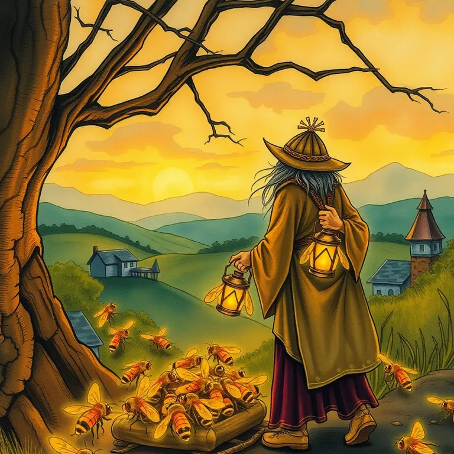

Beehiiv

The bees kept one hundred percent of the honey. The druid still hadn't written this week's newsletter.
Beehiiv is best used for sending a regular scroll (a newsletter) to everyone who's pledged loyalty to your guild, and actually seeing who opened it. A guild that doesn't communicate falls apart faster than a party without a healer. This keeps your followers informed and, eventually, paying. It lands at #4 of 51 on Solos Gems (8.2/10) for newsletters.
The bees kept every drop of honey they made, no middleman skimming the hive. The druid still hadn't actually written this week's scroll, which remains a personal failing, not a tooling one.
- Value for price8.5/10
- Capability8/10
- Ease of use8/10
- Trial safety8.5/10
Best used for
Sending a regular scroll (a newsletter) to everyone who's pledged loyalty to your guild, and actually seeing who opened it.
How it helps the realm
A guild that doesn't communicate falls apart faster than a party without a healer. This keeps your followers informed and, eventually, paying.
Boons
- Analytics dashboard tells you exactly which scrolls people actually read versus which ones went straight in the fire.
- Built-in monetization tools mean loyal readers can eventually become paying patrons.
- Clean editor makes a newsletter look like a proper publication instead of a hastily scrawled note.
Curses
- Growing a subscriber list from zero still takes real effort; no spell here summons readers from thin air.
- The more advanced automation features have a learning curve worth budgeting time for.
Common questions
Do I need existing subscribers to start?
No, but growth still depends on you promoting the newsletter elsewhere; the tool handles delivery and design, not recruitment.
Can readers eventually pay for premium content?
Yes, built-in paid subscription tools let you monetize a following once it's built.
Does it integrate with other tools I might already use?
Yes, it connects with common CRM and automation tools for a more complete workflow.